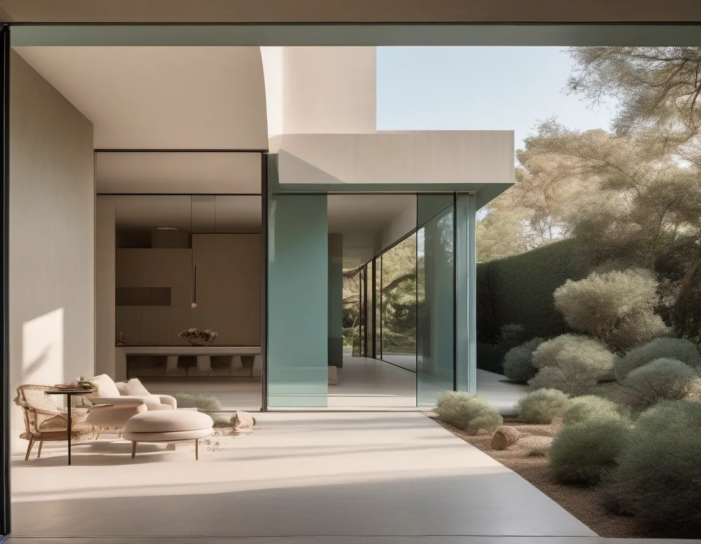

Doble acristalamiento
Aísla del frío y del calor.
Fabricamos el cristal de tus ventanas a medida, sea cual sea su tamaño. Te asesoramos gratis.

Las barras de cada tarjeta muestran las capas que lleva ese cristal.
Aísla del frío y del calor.
Retiene el calor y reduce la factura.
Para calles con tráfico o ruido.
Laminado: no se desprende al romperse.
Ventanales y correderas enormes.
Alto y ancho del hueco, o vamos nosotros a medir.
Aislamiento, silencio, seguridad o tamaño grande.
Cortado a medida y listo para instalar.
Menos gasto en calefacción y aire.
Una casa más tranquila.
Adiós al vaho en invierno.
Protección para tu familia.

Ayudar a cada cliente a elegir el cristal que de verdad necesita, sin tecnicismos y con un presupuesto claro.